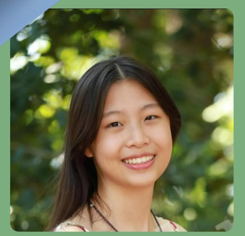

About
Biou (Greek); duration of life, the medium by which life is sustained.
---Current Projects
NeuronicBookNook Journal Club
In Progress: Notes on the Current Brain Facts Book.
---About the Team Members
Danielle Choi:

"Hello! My name is Danielle Choi, and I am currently a sophomore at Glenelg Country School. Coming from a military family with a blend of Japanese and Korean heritage has exposed me to a wide variety of perspectives that constantly influence the way I view the world. As a result, I love to analyze the interplay between our thoughts and cultures through different aspects: the intricate mechanisms of neuroscience and the creative expression of literature. If I do not have my face buried in a book, you can find me playing the flute or painting with Bob Ross tutorials."
Jolin Cheng:
"Hi! I’m Jolin, and I’m currently a junior in North Carolina. I’m super passionate about the sciences and am so excited about BiouBrain (you totally should too! ;))!"
Gurleen Hans:

"Hi, my name is Gurleen Hans! As a high schooler, I often struggled to find neuroscience-related initiatives or extracurriculars in my hometown. As a result, I looked for as many online opportunities as possible and got started. Some of my first neuroscience-related extracurriculars included the NeuroSci101 Lecture Series and Toronto Brain Bee by the UofT CPIN. I also did some extracurriculars with the IYNA, including writing a featured article on general information about dendritic spines and later went on to do the IYNA summer program. In Neuroscience I of the summer program was where I first met the co-founders of BiouBrain and the initiative started up! I am currently in my first year studying Life Sciences at the University of Toronto. To be honest, I'm guilty of not having very many hobbies! I enjoy lifting weights and spending time in nature, and I'm a bit of a plant mom. I like math and anything related to it and know a bit of computer science from my high school classes. I am a total beginner in Simulation Neuroscience topics and want to learn more! I love the Dune movies and rewatch them constantly, and right now I am reading a bit of the first Dune book!"
---